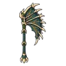

กิ้งก่าหลังใบเรือ
มอนธาตุไฟ Lv 72–92
เจอที่
| แมพ | โซน | Lv | ในแมพ | ภูมิภาค |
|---|---|---|---|---|
| บ่อน้ำร้อนดึกดำบรรพ์ | ลานหินปูนขั้นบันได | 72–92 | ≈45 | ที่ราบสูง |
≈ จำนวนที่อยู่ในแมพพร้อมกันโดยเฉลี่ย คิดจากไฟล์เกม (จุดเกิดของแมพ × 4 แบ่งตามสัดส่วนของแต่ละตัว) ตายแล้วเกิดใหม่ที่เดิมใน 22 วินาที · ตอนเล่นออนไลน์เซิร์ฟเวอร์เป็นคนเกิดมอน อาจไม่ตรง
ค่าสถานะตามเลเวล
| Lv | HP | ATK | DEF | MDEF | EXP | Job |
|---|---|---|---|---|---|---|
| 72 | 42,581 | 152–227 | 29 | 13 | 89 | 67 |
| 82 | 62,221 | 178–268 | 33 | 15 | 101 | 76 |
| 92 | 87,208 | 208–313 | 37 | 17 | 112 | 84 |
ตีด้วยธาตุไหนดี
แรงขึ้น: น้ำ ×1.5 พิษ ×1.25
เบาลง: ดิน ×0.5 ไฟ ×0.25
วัตถุดิบที่ดรอป
| ของ | โอกาส | |
|---|---|---|
| แผ่นหนังใบเรือ | 55% | 1 ชิ้น (15% ได้ 2) |
อุปกรณ์ที่ดรอป (1)
| ของ | โอกาส |
|---|---|
 ขวานยักษ์ใบเรือดึกดำบรรพ์ | 0.03% |
สกิล
พ่น (Lv 25+) · พ่น (Lv 60+) · ปาตกใส่ (Lv 60+)